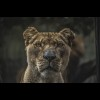
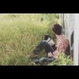

...Un pargraphe sur qui je suis, ..., dans quel état j'ère ... et du texte ... et du texte ... et du texte ... et du texte ... et du texte ... et du texte ... et du texte ... et du texte ... et du texte ... et du texte ... et du texte ... et du texte ... et du texte ... et du texte
Pour plus d'information contactez-moi :-)
Peu d'entre vous le savent mais parmis les organismes vivant sur ce globe ...certains ont ma préférence. ... et du texte ... et du texte ... et du texte ... et du texte ... et du texte ... et du texte ... et du texte ... et du texte ... et du texte ... et du texte ... et du texte
sur ce globe ... il y aussi ...... et du texte ... et du texte ... et du texte ... et du texte ... et du texte ... et du texte ... et du texte ... et du texte ... et du texte ... et du texte ... et du texte ... et du texte ... et du texte ... et du texte ... et du texte ... et du texte ... et du texte ... et du texte ... et du texte ... et du texte ... et du texte
Mauris eu augue massa. Duis condimentum lacinia mollis. Maecenas placerat blandit arcu, ut posuere velit laoreet nec. Nunc feugiat, nisl non vulputate volutpat, lorem arcu tincidunt lorem, ac tincidunt mauris dolor vitae arcu. Pellentesque euismod lacinia dui ut tincidunt. Suspendisse justo mauris, suscipit nec orci non, scelerisque luctus nulla. Phasellus convallis justo eu lacus volutpat, et tristique ligula tristique. Vivamus venenatis vehicula purus, nec euismod erat maximus sit amet. Vivamus iaculis nec orci a lobortis. Aenean scelerisque pellentesque ligula sed aliquet. Ut aliquam sit amet enim eget porttitor. Nam auctor vulputate neque, at volutpat nibh. Nullam pellentesque sollicitudin turpis, id tristique velit ullamcorper a. Cras venenatis sapien placerat dignissim malesuada. Orci varius natoque penatibus et magnis dis parturient montes, nascetur ridiculus mus.
Donec feugiat facilisis condimentum. Curabitur sed tortor et orci eleifend volutpat. Vivamus nec massa lectus. Maecenas in neque vitae metus ultrices tempus et id enim. Mauris pharetra vitae purus non condimentum. Aenean in leo vestibulum, gravida velit et, cursus enim. Sed et sapien metus. Curabitur puis vif tel un fauve  condimentum orci eu metus porttitor pulvinar. Vivamus tincidunt ex sem, sed luctus justo bibendum et. Quisque nec tristique lectus, ut consectetur enim. Duis semper accumsan nunc nec fermentum. Cras fringilla lacus mi, non ultrices metus posuere porttitor. Fusce orci lectus, tempor id justo id, pulvinar convallis purus. Nunc in felis ligula.
Vivamus posuere ex urna, quis cursus metus posuere non. In hac habitasse platea dictumst. Curabitur feugiat finalement un si fidèle compagnon  pulvinar ante vel vehicula. Curabitur vel commodo tellus. Fusce et lectus interdum diam laoreet dignissim in sit amet justo. Aliquam congue turpis ut turpis auctor suscipit. Integer bibendum dapibus elit at interdum. Pellentesque luctus in massa nec facilisis. Cras auctor dictum nunc ac dictum.
Sed blandit nulla et velit aliquam vestibulum. Aenean consequat, tortor eget consectetur consequat, enim nibh tempus eros, nec venenatis nunc nisl malesuada mi. Duis pharetra urna ante, id iaculis diam pulvinar in. Aenean et pellentesque urna. Fusce porta sollicitudin augue at consectetur. Ut ornare eros sed sem suscipit ullamcorper. Maecenas sed ullamcorper lectus. Sed eu felis aliquet, molestie tellus id, fermentum leo.
Comme l'explique Mathieu Nebra: La balise <figure> a un rôle avant tout sémantique. Cela veut dire qu'elle indique à l'ordinateur que l'image a du sens et qu'elle est importante pour la bonne compréhension du texte.